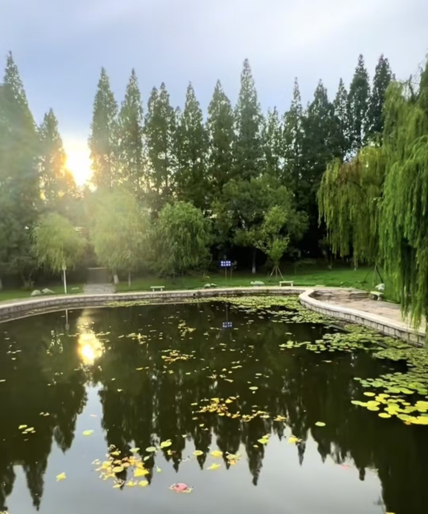

春日的校园，是被暖风轻轻唤醒的温柔天地，褪去了冬日的寒凉，每一寸土地都浸透着生机与诗意。当宿舍楼旁的玉兰花率先挣脱枝桠的束缚，绽开洁白无瑕的花瓣，层层叠叠的花瓣裹着淡淡的幽香，春的气息便顺着校园蜿蜒的石板路，悄悄蔓延到每个角落。图书馆前的广场上，天刚蒙蒙亮，早有晨读的同学捧着书本，身姿挺拔，轻声诵读的声音伴着春风缓缓流淌，身旁的迎春花缀满枝头，一簇簇金黄的小花挤在一起，像撒了一地的碎金，在柔和的晨光里闪闪发亮，晃得人眼明心暖，也为这静谧的晨读时光添了几分灵动。
人工湖的冰面早已在暖阳的轻抚下消融殆尽，澄澈的湖水泛着粼粼的波光，微风拂过，水面泛起圈圈涟漪，将岸边的光影揉成一片温柔。岸边的芦苇褪去了冬日的枯黄，抽出嫩绿的新穗，纤细的茎秆在风中轻轻摇曳，几只野鸭悠闲地凫在水面，时不时低头啄食，划过一道道浅浅的水痕，转瞬便消失在芦苇丛中，为这湖水增添了几分野趣。篮球场边的梧桐树褪去了褐色的老树皮，露出青灰色的枝干，嫩绿的新叶一片片舒展开来，像一个个小巧的巴掌，阳光穿过细密的叶缝，在地面投下斑驳的光影，随风轻轻晃动。打球的少年们身姿矫健，奔跑、跳跃、传球、投篮，动作利落而有力量，汗水顺着脸颊滑落，混着和煦的春风，肆意挥洒，那蓬勃的朝气，正是青春最鲜活、最动人的模样。
教学楼的走廊里，阳光透过明亮的玻璃窗，洒下一片温暖，窗台上摆着同学们精心养护的多肉，胖乎乎的叶片透着翠绿，春日里也悄悄冒出了粉嫩的侧芽，小巧可爱，为严谨的学习氛围添了几分生机与温情。实验室外的紫藤萝架，藤蔓早已褪去冬日的枯寂，嫩绿色的枝条正悄悄攀上栏杆，缠绕着、生长着，枝头上缀满了小小的花苞，像一个个紫色的小铃铛，默默酝酿着满架的紫霞，盼着不久后惊艳整个校园。春日的校园从不是单一的风景，而是藏在每个角落的惊喜：是食堂旁的樱花树，微风一吹，粉色的花瓣簌簌飘落，铺成一条浪漫的樱花雨；是操场边的风筝线，牵着少年的心事，在蓝天上自由飘荡；是课堂上老师写下的板书，字迹工整，藏着知识的力量；也是课后好友并肩走过的林荫道，说说笑笑，脚步轻快，把青春的欢喜藏在春风里。春华正好，微风不燥，校园里的每一寸生机，每一缕芬芳，都与少年的梦想并肩生长，在温柔的春风里，悄悄写就最动人、最热烈的校园篇章。
